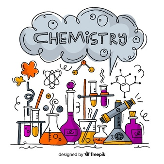
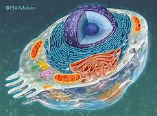

 |
ALICIA GRAHAM | |
| RESUME OBJECTIVE
A Bachelor of Science Degree graduate to be with specialization in Chemistry and Biology. Seeking the role of
Lab Assistant where I can use 4 years of Lab experience to work | ||
|
ExperiencesLab WorkOver the past four years, I have worked in a chemistry lab at least once a week. I have gathered many skills from this experience that I will use throughout my work as Lab assistant. Skills I have gained include, safe and efficient use of chemicals and equipment regularly used within a chemistry lab setting, confidence in carrying out experiments independently and working well as a team with fellow students. Waitress at ZucchinisI have worked in Zucchinis Restaurant for three years and have gained many useful skills needed within the workplace. My responsibilities included, welcoming customers into the restaurant and ensuring they were comfortable at their given table, taking their orders and offering my opinions on food choices, completing bookings and answering the phone, and ensuring there was a tidy and safe workspace for both customers and staff members. HobbyMy hobbies include Music, Art and Sport. |
|
|
ProjectsProject on How Epstein Barr Virus Triggers Rheumatoid Arthritis.In my third year of University I completed a project on how the body reacts to Epstein Barr Virus(EBV) and how this virus triggers Rheumatoid Arthritis (RA)
years after they have been exposed to EBV and Project on Biologics For Rheumatoid Arthritis.For my final year project in University I researched Biologics For Rheumatoid Arthritis RA, as this is a topic of great interest to me. RA is a debilitating diease that is affected by autoantibodies produced in the body and these trigger cytokines that induce inflammation and lead to increased swelling and pain in the synovial joints. Biologics are drugs that are made to inhibit these processes that increase the pathogenesis of RA. For Further Research On RA: https://www.rheumatoidarthritis.org/ra/ | |
EducationMaynooth University
St.Josephs Mercy Secondary School |
 | |